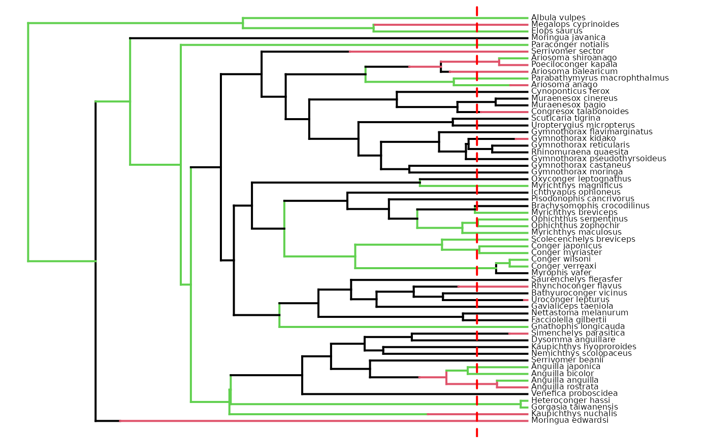
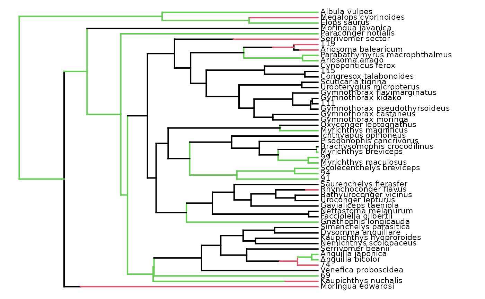

Extract all trait data from stochastic maps at a given time in the past
Source:R/extract_all_trait_values_for_focal_time.R
extract_all_trait_values_for_focal_time.RdExtracts all trait values/states/ranges found along branches
of multiple stochastic maps at a specific time in the past (i.e. the focal_time).
Optionally, the function can update the mapped phylogenies (contMaps or densityMaps)
such as branches overlapping the focal_time are shortened to the focal_time,
and the trait mapping for the cut off branches are removed
by updating the $maps and $mapped.edge elements.
Usage
extract_all_trait_values_for_focal_time(
contMaps = NULL,
densityMaps = NULL,
simmaps = NULL,
nb_simulations = NULL,
tip_data = NULL,
trait_data_type,
focal_time,
update_Map = FALSE,
keep_tip_labels = TRUE
)Arguments
- contMaps
For continuous trait data. List of objects of class
"contMap", typically generated withprepare_trait_data(), each containing a phylogenetic tree and associated continuous trait mapping that represents an independent evolutionary history of ancestral trait evolution, conditioned on observed trait data and model fit (i.e., stochastic maps). The phylogenetic tree must be rooted and fully resolved/dichotomous, but it does not need to be ultrametric (it can include fossils).- densityMaps
For categorical trait or biogeographic data. List of objects of class
"densityMap", typically generated withprepare_trait_data(), that contains a phylogenetic tree and associated posterior probability of being in a given state/range along branches. Each object (i.e.,densityMap) corresponds to a state/range. The phylogenetic tree must be rooted and fully resolved/dichotomous, but it does not need to be ultrametric (it can include fossils).- simmaps
For categorical trait or biogeographic data. List of objects of classes
"phylo"and"simmap", typically generated withprepare_trait_data()orphytools::make.simmap(), that represent discrete character/geographic evolutionary history (i.e., transitions in character states/geographic ranges) mapped along branches. This is needed to be able to track which simulated history provided which trait data in downstream analyses employing the "paired" or "full" strategies to account for uncertainty in ancestral trait estimates.- nb_simulations
For categorical trait or biogeographic data. Integer. The number of stochastic maps used to simulate trait evolution. This is needed for the "paired" and "full" strategies to account for trait estimate uncertainty, if only densityMaps summarizing posterior state/range density are provided, but not the simmaps representing all evolutionary histories.
- tip_data
(Optional) Named vector of tip values of the trait.
For continuous trait data: Named numeric vector of trait values.
For categorical trait or biogeographic data: Character string vector of states/ranges Names are nodes_ID of the internal nodes. Ensure accurate tip values are used.
- trait_data_type
Character string. Specify the type of trait data. Must be one of "continuous", "categorical", "biogeographic".
- focal_time
Integer. The time, in terms of time distance from the present, at which the tree and mapping must be cut. It must be smaller than the root age of the phylogeny.
- update_Map
Logical. Specify whether the mapped phylogeny (
contMap,densityMaps, and/orsimmaps) provided as input should be updated for visualization and returned among the outputs. Default isFALSE. The update consists of cutting off branches and mapping that are younger than thefocal_time.- keep_tip_labels
Logical. Specify whether terminal branches with a single descendant tip must retain their initial
tip.labelon the updated contMap. Default isTRUE. Used only ifupdate_Map = TRUE.
Value
By default, the function returns a list with three elements.
$trait_dataA list of named numeric vectors with simulated trait values found along branches overlapping thefocal_timeacross each of the stochastic maps. Names are the tip.label/tipward node ID. ID of the associated stochastic maps associated with each item of the list can only be provided if simmaps are provided as inputs. If only densityMaps are provided, the distribution of states/ranges is associated with dummy maps_ID.$focal_timeInteger. The time, in terms of time distance from the present, at which the trait data were extracted.$trait_data_typeCharacter string. Define the type of trait data as "continuous", "categorical", or "biogeographic". Used in downstream analyses to select appropriate statistical processing.
If update_Map = TRUE, the output is a list with four to five elements: $trait_data, $focal_time, $trait_data_type, $contMaps or $densityMaps, and/or $simmaps.
For continuous trait data:
$contMapsA list of objects of class"contMap"that contains the updatedcontMapswith branches and mapping that are younger than thefocal_timecut off. The function also adds multiple useful sub-elements to the$contMap$treeelements.$root_ageInteger. Stores the age of the root of the tree.$nodes_ID_dfData.frame with two columns. Provides the conversion from thenew_node_IDto theinitial_node_ID. Each row is a node.$initial_nodes_IDCharacter vector. Provides the initial ID of internal nodes. Used to plot internal node IDs as labels withape::nodelabels().$edges_ID_dfData.frame with two columns. Provides the conversion from thenew_edge_IDto theinitial_edge_ID. Each row is an edge/branch.$initial_edges_IDCharacter vector. Provides the initial ID of edges/branches. Used to plot edge/branch IDs as labels withape::edgelabels().
For categorical trait and biogeographic data:
$densityMapsA list of objects of class"densityMap"that contains the updateddensityMapof each state/range, with branches and mapping that are younger than thefocal_timecut off. The function also adds multiple useful sub-elements to the$densityMaps$treeelements.$root_ageInteger. Stores the age of the root of the tree.$nodes_ID_dfData.frame with two columns. Provides the conversion from thenew_node_IDto theinitial_node_ID. Each row is a node.$initial_nodes_IDCharacter vector. Provides the initial ID of internal nodes. Used to plot internal node IDs as labels withape::nodelabels().$edges_ID_dfData.frame with two columns. Provides the conversion from thenew_edge_IDto theinitial_edge_ID. Each row is an edge/branch.$initial_edges_IDCharacter vector. Provides the initial ID of edges/branches. Used to plot edge/branch IDs as labels withape::edgelabels().
$simmapsA list of objects with the class"simmap"that contains the updatedsimmap= stochastic maps representing discrete character/geographic evolutionary history, with branches and mapping that are younger than thefocal_timecut off. The function also adds multiple useful sub-elements to eachsimmap.$root_ageInteger. Stores the age of the root of the tree.$nodes_ID_dfData.frame with two columns. Provides the conversion from thenew_node_IDto theinitial_node_ID. Each row is a node.$initial_nodes_IDCharacter vector. Provides the initial ID of internal nodes. Used to plot internal node IDs as labels withape::nodelabels().$edges_ID_dfData.frame with two columns. Provides the conversion from thenew_edge_IDto theinitial_edge_ID. Each row is an edge/branch.$initial_edges_IDCharacter vector. Provides the initial ID of edges/branches. Used to plot edge/branch IDs as labels withape::edgelabels().
Details
The mapped phylogenies (contMaps, densityMaps, or simmaps) are cut at a specific time in the past
(i.e. the focal_time) and the associated trait values of the overlapping edges/branches are extracted.
—– Extract trait_data —–
For continuous trait data:
Simulated trait data are extracted from contMaps (i.e. continuous stochastic maps).
For categorical trait and biogeographic data:
If simmaps are provided as input, all states/ranges are extracted directly from the stochastic maps.
If only densityMaps are provided, the posterior probabilities of states/ranges are extracted.
Posterior probabilities are multiplied by the nb_simulations to record the distribution of states/ranges
across dummy stochastic maps and assigned to each tip and cut branches at focal_time.
True tip states/ranges will be used if tip_data are provided as optional inputs.
In practice the discrepancy is negligible.
—– Update the contMap/densityMaps/simmaps —–
To obtain an updated contMap/densityMaps/simmaps alongside the trait data, set update_Map = TRUE.
The update consists of cutting off branches and mapping that are younger than the focal_time.
When a branch with a single descendant tip is cut and
keep_tip_labels = TRUE, the leaf left is labeled with the tip.label of the unique descendant tip.When a branch with a single descendant tip is cut and
keep_tip_labels = FALSE, the leaf left is labeled with the node ID of the unique descendant tip.In all cases, when a branch with multiple descendant tips (i.e., a clade) is cut, the leaf left is labeled with the node ID of the MRCA of the cut-off clade.
The mapping in contMap/densityMaps/simmaps ($maps and $mapped.edge) is updated accordingly by removing mapping associated with the cut off branches.
To extract only the most likely trait value/state/range, see this associated function: extract_most_likely_trait_values_for_focal_time()
See also
cut_phylo_for_focal_time() cut_contMaps_for_focal_time() cut_densityMaps_for_focal_time() cut_simmaps_for_focal_time()
Equivalent function to extract the most likely trait value/state/range from mapped phylogenies:
extract_most_likely_trait_values_for_focal_time()
Examples
# ----- Example 1: Continuous trait ----- #
if (deepSTRAPP::is_dev_version())
{
## The R package 'contsimmap' is needed for this example to work.
# Please install it manually from: https://github.com/bstaggmartin/contsimmap.
## Prepare data
# Load eel data from the R package phytools
# Source: Collar et al., 2014; DOI: 10.1038/ncomms6505
library(phytools)
data(eel.tree)
data(eel.data)
# Extract body size
eel_data <- setNames(eel.data$Max_TL_cm,
rownames(eel.data))
# (May take several minutes to run)
## Map continuous trait evolution on the phylogeny
eel_cont_data <- prepare_trait_data(
tip_data = eel_data,
trait_data_type = "continuous",
phylo = eel.tree,
# evolutionary_models = c("BM", "OU", "lambda", "kappa"),
evolutionary_models = c("BM"),
# Perform stochastic mapping to obtain multiple evolutionary histories
run_stochastic_maps = TRUE,
nb_simulations = 100,
verbose = TRUE)
# Extract continuous stochastic maps (contMaps)
eel_contMaps <- eel_cont_data$contMaps
# Plot the interpolated map of ML estimates
plot_contMap(contMap = eel_cont_data$contMap)
# Plot several continuous stochastic maps (contMaps)
plot_contMap(contMap = eel_contMaps[[1]])
plot_contMap(contMap = eel_contMaps[[10]])
plot_contMap(contMap = eel_contMaps[[100]])
# Set focal time to 10 Mya
focal_time <- 10
## Extract all trait values for focal time = 10 Mya
extract_trait_data_10My <- extract_all_trait_values_for_focal_time(
contMaps = eel_contMaps, trait_data_type = "continuous",
focal_time = 10, update_Map = TRUE)
# Convert in data.frame
# Rows = Stochastic maps
# Columns = Cut branches at 10 Mya
trait_data_df <- as.data.frame(do.call(rbind, extract_trait_data_10My$trait_data))
head(trait_data_df)
## Plot updated contMaps
updated_contMaps_10My <- extract_trait_data_10My$contMaps
plot_contMap(contMap = updated_contMaps_10My[[1]])
plot_contMap(contMap = updated_contMaps_10My[[10]])
plot_contMap(contMap = updated_contMaps_10My[[100]])
}
# ----- Example 2: Categorical trait ----- #
## Load categorical trait data mapped on a phylogeny
data(eel_cat_3lvl_data, package = "deepSTRAPP")
# Explore data
str(eel_cat_3lvl_data, 1)
#> List of 6
#> $ densityMaps :List of 3
#> $ trait_data_type : chr "categorical"
#> $ simmaps :Class "multiPhylo"
#> List of 100
#> $ ace : num [1:60, 1:3] 0.26 0.3 0.39 0.43 0.43 0.44 0.43 0 0.47 0.49 ...
#> ..- attr(*, "dimnames")=List of 2
#> $ best_model_fit :List of 4
#> ..- attr(*, "class")= chr [1:2] "gfit" "list"
#> $ model_selection_df:'data.frame': 5 obs. of 6 variables:
eel_cat_3lvl_data$densityMaps # Three density maps: one per state
#> $Density_map_bite
#> Object of class "densityMap" containing:
#>
#> (1) A phylogenetic tree with 61 tips and 60 internal nodes.
#>
#> (2) The mapped posterior density of a discrete binary character
#> with states (Not bite, bite).
#>
#>
#> $Density_map_kiss
#> Object of class "densityMap" containing:
#>
#> (1) A phylogenetic tree with 61 tips and 60 internal nodes.
#>
#> (2) The mapped posterior density of a discrete binary character
#> with states (Not kiss, kiss).
#>
#>
#> $Density_map_suction
#> Object of class "densityMap" containing:
#>
#> (1) A phylogenetic tree with 61 tips and 60 internal nodes.
#>
#> (2) The mapped posterior density of a discrete binary character
#> with states (Not suction, suction).
#>
#>
# Set focal time to 10 Mya
focal_time <- 10
# (May take several minutes to run)
## Extract trait data and update densityMaps for the given focal_time
# Extract from the densityMaps
eel_cat_3lvl_data_10My <- extract_all_trait_values_for_focal_time(
densityMaps = eel_cat_3lvl_data$densityMaps,
trait_data_type = "categorical",
nb_simulations = 100,
focal_time = focal_time,
update_Map = TRUE)
#> WARNING: No tip data have been provided. Using states extracted from the densityMaps instead.
## Print trait data
str(eel_cat_3lvl_data_10My, 1)
#> List of 4
#> $ trait_data :List of 100
#> $ focal_time : num 10
#> $ trait_data_type: chr "categorical"
#> $ densityMaps :List of 3
eel_cat_3lvl_data_10My$trait_data[1:2]
#> $Dummy_map_1
#> Moringua_edwardsi Kaupichthys_nuchalis
#> "bite" "bite"
#> 69 Venefica_proboscidea
#> "bite" "bite"
#> 74 Anguilla_bicolor
#> "bite" "bite"
#> Anguilla_japonica Serrivomer_beanii
#> "bite" "bite"
#> Nemichthys_scolopaceus Kaupichthys_hyoproroides
#> "bite" "bite"
#> Dysomma_anguillare Simenchelys_parasitica
#> "bite" "bite"
#> Gnathophis_longicauda Facciolella_gilbertii
#> "bite" "bite"
#> Nettastoma_melanurum Gavialiceps_taeniola
#> "bite" "bite"
#> Uroconger_lepturus Bathyuroconger_vicinus
#> "bite" "bite"
#> Rhynchoconger_flavus Saurenchelys_fierasfer
#> "bite" "bite"
#> 91 94
#> "bite" "bite"
#> Scolecenchelys_breviceps Myrichthys_maculosus
#> "bite" "bite"
#> 99 Myrichthys_breviceps
#> "bite" "bite"
#> Brachysomophis_crocodilinus Pisodonophis_cancrivorus
#> "bite" "bite"
#> Ichthyapus_ophioneus Myrichthys_magnificus
#> "bite" "bite"
#> Oxyconger_leptognathus Gymnothorax_moringa
#> "bite" "bite"
#> Gymnothorax_castaneus Gymnothorax_pseudothyrsoideus
#> "bite" "bite"
#> 111 Gymnothorax_kidako
#> "bite" "bite"
#> Gymnothorax_flavimarginatus Uropterygius_micropterus
#> "bite" "bite"
#> Scuticaria_tigrina Congresox_talabonoides
#> "bite" "bite"
#> 115 Cynoponticus_ferox
#> "bite" "bite"
#> Ariosoma_anago Parabathymyrus_macrophthalmus
#> "bite" "bite"
#> Ariosoma_balearicum 119
#> "bite" "bite"
#> Serrivomer_sector Paraconger_notialis
#> "bite" "bite"
#> Moringua_javanica Elops_saurus
#> "bite" "bite"
#> Megalops_cyprinoides Albula_vulpes
#> "bite" "bite"
#>
#> $Dummy_map_2
#> Moringua_edwardsi Kaupichthys_nuchalis
#> "bite" "bite"
#> 69 Venefica_proboscidea
#> "bite" "bite"
#> 74 Anguilla_bicolor
#> "bite" "bite"
#> Anguilla_japonica Serrivomer_beanii
#> "bite" "bite"
#> Nemichthys_scolopaceus Kaupichthys_hyoproroides
#> "bite" "bite"
#> Dysomma_anguillare Simenchelys_parasitica
#> "bite" "bite"
#> Gnathophis_longicauda Facciolella_gilbertii
#> "bite" "bite"
#> Nettastoma_melanurum Gavialiceps_taeniola
#> "bite" "bite"
#> Uroconger_lepturus Bathyuroconger_vicinus
#> "bite" "bite"
#> Rhynchoconger_flavus Saurenchelys_fierasfer
#> "bite" "bite"
#> 91 94
#> "bite" "bite"
#> Scolecenchelys_breviceps Myrichthys_maculosus
#> "bite" "kiss"
#> 99 Myrichthys_breviceps
#> "bite" "bite"
#> Brachysomophis_crocodilinus Pisodonophis_cancrivorus
#> "bite" "bite"
#> Ichthyapus_ophioneus Myrichthys_magnificus
#> "bite" "bite"
#> Oxyconger_leptognathus Gymnothorax_moringa
#> "bite" "bite"
#> Gymnothorax_castaneus Gymnothorax_pseudothyrsoideus
#> "bite" "bite"
#> 111 Gymnothorax_kidako
#> "bite" "bite"
#> Gymnothorax_flavimarginatus Uropterygius_micropterus
#> "bite" "bite"
#> Scuticaria_tigrina Congresox_talabonoides
#> "bite" "bite"
#> 115 Cynoponticus_ferox
#> "bite" "bite"
#> Ariosoma_anago Parabathymyrus_macrophthalmus
#> "bite" "bite"
#> Ariosoma_balearicum 119
#> "bite" "bite"
#> Serrivomer_sector Paraconger_notialis
#> "bite" "bite"
#> Moringua_javanica Elops_saurus
#> "bite" "bite"
#> Megalops_cyprinoides Albula_vulpes
#> "bite" "bite"
#>
# Convert in data.frame
# Rows = Dummy stochastic maps
# Columns = Cut branches at 10 Mya
trait_data_df <- as.data.frame(do.call(rbind, eel_cat_3lvl_data_10My$trait_data))
trait_data_df[50:60, ]
#> Moringua_edwardsi Kaupichthys_nuchalis 69
#> Dummy_map_50 bite bite suction
#> Dummy_map_51 bite bite suction
#> Dummy_map_52 bite bite suction
#> Dummy_map_53 bite bite suction
#> Dummy_map_54 bite bite suction
#> Dummy_map_55 bite bite suction
#> Dummy_map_56 bite bite suction
#> Dummy_map_57 bite bite suction
#> Dummy_map_58 bite bite suction
#> Dummy_map_59 bite bite suction
#> Dummy_map_60 bite bite suction
#> Venefica_proboscidea 74 Anguilla_bicolor Anguilla_japonica
#> Dummy_map_50 bite suction suction suction
#> Dummy_map_51 bite suction suction suction
#> Dummy_map_52 bite suction suction suction
#> Dummy_map_53 bite suction suction suction
#> Dummy_map_54 bite suction suction suction
#> Dummy_map_55 bite suction suction suction
#> Dummy_map_56 bite suction suction suction
#> Dummy_map_57 bite suction suction suction
#> Dummy_map_58 bite suction suction suction
#> Dummy_map_59 bite suction suction suction
#> Dummy_map_60 bite suction suction suction
#> Serrivomer_beanii Nemichthys_scolopaceus Kaupichthys_hyoproroides
#> Dummy_map_50 bite bite bite
#> Dummy_map_51 bite bite bite
#> Dummy_map_52 bite bite bite
#> Dummy_map_53 bite bite bite
#> Dummy_map_54 bite bite bite
#> Dummy_map_55 bite bite bite
#> Dummy_map_56 bite bite bite
#> Dummy_map_57 bite bite bite
#> Dummy_map_58 bite bite bite
#> Dummy_map_59 bite bite bite
#> Dummy_map_60 bite bite bite
#> Dysomma_anguillare Simenchelys_parasitica Gnathophis_longicauda
#> Dummy_map_50 kiss kiss suction
#> Dummy_map_51 kiss kiss suction
#> Dummy_map_52 kiss kiss suction
#> Dummy_map_53 kiss kiss suction
#> Dummy_map_54 kiss kiss suction
#> Dummy_map_55 kiss kiss suction
#> Dummy_map_56 kiss kiss suction
#> Dummy_map_57 kiss kiss suction
#> Dummy_map_58 kiss kiss suction
#> Dummy_map_59 kiss kiss suction
#> Dummy_map_60 kiss kiss suction
#> Facciolella_gilbertii Nettastoma_melanurum Gavialiceps_taeniola
#> Dummy_map_50 bite bite bite
#> Dummy_map_51 bite bite bite
#> Dummy_map_52 bite bite bite
#> Dummy_map_53 bite bite bite
#> Dummy_map_54 bite bite bite
#> Dummy_map_55 bite bite bite
#> Dummy_map_56 bite bite bite
#> Dummy_map_57 bite bite bite
#> Dummy_map_58 bite bite bite
#> Dummy_map_59 bite bite bite
#> Dummy_map_60 bite bite bite
#> Uroconger_lepturus Bathyuroconger_vicinus Rhynchoconger_flavus
#> Dummy_map_50 suction bite kiss
#> Dummy_map_51 suction bite kiss
#> Dummy_map_52 suction bite kiss
#> Dummy_map_53 suction bite kiss
#> Dummy_map_54 suction bite kiss
#> Dummy_map_55 suction bite kiss
#> Dummy_map_56 suction bite kiss
#> Dummy_map_57 suction bite kiss
#> Dummy_map_58 suction bite kiss
#> Dummy_map_59 suction bite kiss
#> Dummy_map_60 suction kiss kiss
#> Saurenchelys_fierasfer 91 94 Scolecenchelys_breviceps
#> Dummy_map_50 kiss suction suction suction
#> Dummy_map_51 kiss suction suction suction
#> Dummy_map_52 kiss suction suction suction
#> Dummy_map_53 kiss suction suction suction
#> Dummy_map_54 kiss suction suction suction
#> Dummy_map_55 kiss suction suction suction
#> Dummy_map_56 kiss suction suction suction
#> Dummy_map_57 kiss suction suction suction
#> Dummy_map_58 kiss suction suction suction
#> Dummy_map_59 kiss suction suction suction
#> Dummy_map_60 kiss suction suction suction
#> Myrichthys_maculosus 99 Myrichthys_breviceps
#> Dummy_map_50 suction suction suction
#> Dummy_map_51 suction suction suction
#> Dummy_map_52 suction suction suction
#> Dummy_map_53 suction suction suction
#> Dummy_map_54 suction suction suction
#> Dummy_map_55 suction suction suction
#> Dummy_map_56 suction suction suction
#> Dummy_map_57 suction suction suction
#> Dummy_map_58 suction suction suction
#> Dummy_map_59 suction suction suction
#> Dummy_map_60 suction suction suction
#> Brachysomophis_crocodilinus Pisodonophis_cancrivorus
#> Dummy_map_50 suction bite
#> Dummy_map_51 suction bite
#> Dummy_map_52 suction bite
#> Dummy_map_53 suction bite
#> Dummy_map_54 suction bite
#> Dummy_map_55 suction bite
#> Dummy_map_56 suction bite
#> Dummy_map_57 suction bite
#> Dummy_map_58 suction bite
#> Dummy_map_59 suction bite
#> Dummy_map_60 suction kiss
#> Ichthyapus_ophioneus Myrichthys_magnificus Oxyconger_leptognathus
#> Dummy_map_50 kiss suction bite
#> Dummy_map_51 kiss suction bite
#> Dummy_map_52 kiss suction bite
#> Dummy_map_53 kiss suction bite
#> Dummy_map_54 kiss suction bite
#> Dummy_map_55 kiss suction bite
#> Dummy_map_56 kiss suction bite
#> Dummy_map_57 kiss suction bite
#> Dummy_map_58 kiss suction bite
#> Dummy_map_59 kiss suction bite
#> Dummy_map_60 kiss suction kiss
#> Gymnothorax_moringa Gymnothorax_castaneus
#> Dummy_map_50 bite bite
#> Dummy_map_51 bite bite
#> Dummy_map_52 bite bite
#> Dummy_map_53 bite bite
#> Dummy_map_54 bite bite
#> Dummy_map_55 bite bite
#> Dummy_map_56 bite bite
#> Dummy_map_57 bite bite
#> Dummy_map_58 bite bite
#> Dummy_map_59 bite bite
#> Dummy_map_60 bite bite
#> Gymnothorax_pseudothyrsoideus 111 Gymnothorax_kidako
#> Dummy_map_50 kiss kiss kiss
#> Dummy_map_51 kiss kiss kiss
#> Dummy_map_52 kiss kiss kiss
#> Dummy_map_53 kiss kiss kiss
#> Dummy_map_54 kiss kiss kiss
#> Dummy_map_55 kiss kiss kiss
#> Dummy_map_56 kiss kiss kiss
#> Dummy_map_57 kiss kiss kiss
#> Dummy_map_58 kiss kiss kiss
#> Dummy_map_59 kiss kiss kiss
#> Dummy_map_60 kiss kiss kiss
#> Gymnothorax_flavimarginatus Uropterygius_micropterus
#> Dummy_map_50 kiss kiss
#> Dummy_map_51 kiss kiss
#> Dummy_map_52 kiss kiss
#> Dummy_map_53 kiss kiss
#> Dummy_map_54 kiss kiss
#> Dummy_map_55 kiss kiss
#> Dummy_map_56 kiss kiss
#> Dummy_map_57 kiss kiss
#> Dummy_map_58 kiss kiss
#> Dummy_map_59 kiss kiss
#> Dummy_map_60 kiss kiss
#> Scuticaria_tigrina Congresox_talabonoides 115 Cynoponticus_ferox
#> Dummy_map_50 kiss kiss bite kiss
#> Dummy_map_51 kiss kiss bite kiss
#> Dummy_map_52 kiss kiss bite kiss
#> Dummy_map_53 kiss kiss bite kiss
#> Dummy_map_54 kiss kiss bite kiss
#> Dummy_map_55 kiss kiss bite kiss
#> Dummy_map_56 kiss kiss bite kiss
#> Dummy_map_57 kiss kiss bite kiss
#> Dummy_map_58 kiss kiss bite kiss
#> Dummy_map_59 kiss kiss bite kiss
#> Dummy_map_60 kiss kiss bite kiss
#> Ariosoma_anago Parabathymyrus_macrophthalmus Ariosoma_balearicum
#> Dummy_map_50 kiss suction kiss
#> Dummy_map_51 kiss suction kiss
#> Dummy_map_52 kiss suction kiss
#> Dummy_map_53 kiss suction kiss
#> Dummy_map_54 kiss suction kiss
#> Dummy_map_55 kiss suction kiss
#> Dummy_map_56 kiss suction kiss
#> Dummy_map_57 kiss suction kiss
#> Dummy_map_58 kiss suction kiss
#> Dummy_map_59 kiss suction kiss
#> Dummy_map_60 kiss suction kiss
#> 119 Serrivomer_sector Paraconger_notialis Moringua_javanica
#> Dummy_map_50 suction bite suction bite
#> Dummy_map_51 suction bite suction bite
#> Dummy_map_52 suction bite suction bite
#> Dummy_map_53 suction bite suction bite
#> Dummy_map_54 suction bite suction bite
#> Dummy_map_55 suction bite suction bite
#> Dummy_map_56 suction bite suction bite
#> Dummy_map_57 suction bite suction bite
#> Dummy_map_58 suction bite suction bite
#> Dummy_map_59 suction bite suction bite
#> Dummy_map_60 suction bite suction bite
#> Elops_saurus Megalops_cyprinoides Albula_vulpes
#> Dummy_map_50 suction suction kiss
#> Dummy_map_51 suction suction kiss
#> Dummy_map_52 suction suction kiss
#> Dummy_map_53 suction suction kiss
#> Dummy_map_54 suction suction kiss
#> Dummy_map_55 suction suction kiss
#> Dummy_map_56 suction suction kiss
#> Dummy_map_57 suction suction kiss
#> Dummy_map_58 suction suction kiss
#> Dummy_map_59 suction suction kiss
#> Dummy_map_60 suction suction kiss
# Distributions of states across dummy stochastic maps reflect posterior probabilities
# recorded in densityMaps, but they are not true evolutionary histories.
# If you want to relate trait states with a simulated evolutionary history,
# you need to provide simmaps as input.
# ----- Example 3: Biogeographic ranges ----- #
## Load biogeographic range data mapped on a phylogeny
data(eel_biogeo_data, package = "deepSTRAPP")
# Explore data
str(eel_biogeo_data, 1)
#> List of 9
#> $ densityMaps :List of 2
#> $ densityMaps_all_ranges:List of 3
#> $ trait_data_type : chr "biogeographic"
#> $ ace : num [1:60, 1:2] 0.361 0.524 0.623 0.334 0.47 ...
#> ..- attr(*, "dimnames")=List of 2
#> $ ace_all_ranges : num [1:60, 1:3] 0.174 0.373 0.53 0.244 0.411 ...
#> ..- attr(*, "dimnames")=List of 2
#> $ BSM_output :List of 2
#> $ simmaps :Class "multiPhylo"
#> List of 100
#> $ best_model_fit :List of 13
#> $ model_selection_df :'data.frame': 6 obs. of 8 variables:
length(eel_biogeo_data$simmaps) # 100 stochastic maps: one per simulated biogeographic history
#> [1] 100
# Set focal time to 10 Mya
focal_time <- 10
# (May take several minutes to run)
## Extract trait data and update simmaps for the given focal_time
# Extract from the simmaps
eel_biogeo_data_10My <- extract_all_trait_values_for_focal_time(
simmaps = eel_biogeo_data$simmaps,
trait_data_type = "biogeographic",
focal_time = focal_time,
update_Map = TRUE)
#> WARNING: No tip data have been provided. Using ranges extracted from the simmaps instead.
## Print trait data
str(eel_biogeo_data_10My, 1)
#> List of 4
#> $ trait_data :List of 100
#> $ focal_time : num 10
#> $ trait_data_type: chr "biogeographic"
#> $ simmaps :List of 100
eel_biogeo_data_10My$trait_data[1:2]
#> $Map_1
#> Moringua_edwardsi Kaupichthys_nuchalis
#> "AB" "AB"
#> 69 Venefica_proboscidea
#> "B" "A"
#> 74 Anguilla_bicolor
#> "AB" "B"
#> Anguilla_japonica Serrivomer_beanii
#> "B" "A"
#> Nemichthys_scolopaceus Kaupichthys_hyoproroides
#> "A" "A"
#> Dysomma_anguillare Simenchelys_parasitica
#> "A" "A"
#> Gnathophis_longicauda Facciolella_gilbertii
#> "B" "A"
#> Nettastoma_melanurum Gavialiceps_taeniola
#> "A" "A"
#> Uroconger_lepturus Bathyuroconger_vicinus
#> "A" "A"
#> Rhynchoconger_flavus Saurenchelys_fierasfer
#> "AB" "A"
#> 91 94
#> "B" "B"
#> Scolecenchelys_breviceps Myrichthys_maculosus
#> "B" "B"
#> 99 Myrichthys_breviceps
#> "B" "B"
#> Brachysomophis_crocodilinus Pisodonophis_cancrivorus
#> "A" "A"
#> Ichthyapus_ophioneus Myrichthys_magnificus
#> "A" "B"
#> Oxyconger_leptognathus Gymnothorax_moringa
#> "A" "A"
#> Gymnothorax_castaneus Gymnothorax_pseudothyrsoideus
#> "A" "A"
#> 111 Gymnothorax_kidako
#> "A" "A"
#> Gymnothorax_flavimarginatus Uropterygius_micropterus
#> "A" "A"
#> Scuticaria_tigrina Congresox_talabonoides
#> "A" "A"
#> 115 Cynoponticus_ferox
#> "A" "A"
#> Ariosoma_anago Parabathymyrus_macrophthalmus
#> "B" "B"
#> Ariosoma_balearicum 119
#> "AB" "AB"
#> Serrivomer_sector Paraconger_notialis
#> "AB" "B"
#> Moringua_javanica Elops_saurus
#> "A" "B"
#> Megalops_cyprinoides Albula_vulpes
#> "AB" "B"
#>
#> $Map_2
#> Moringua_edwardsi Kaupichthys_nuchalis
#> "AB" "B"
#> 69 Venefica_proboscidea
#> "B" "A"
#> 74 Anguilla_bicolor
#> "AB" "B"
#> Anguilla_japonica Serrivomer_beanii
#> "B" "A"
#> Nemichthys_scolopaceus Kaupichthys_hyoproroides
#> "A" "A"
#> Dysomma_anguillare Simenchelys_parasitica
#> "A" "AB"
#> Gnathophis_longicauda Facciolella_gilbertii
#> "B" "A"
#> Nettastoma_melanurum Gavialiceps_taeniola
#> "A" "A"
#> Uroconger_lepturus Bathyuroconger_vicinus
#> "AB" "A"
#> Rhynchoconger_flavus Saurenchelys_fierasfer
#> "AB" "A"
#> 91 94
#> "AB" "B"
#> Scolecenchelys_breviceps Myrichthys_maculosus
#> "B" "B"
#> 99 Myrichthys_breviceps
#> "B" "B"
#> Brachysomophis_crocodilinus Pisodonophis_cancrivorus
#> "A" "A"
#> Ichthyapus_ophioneus Myrichthys_magnificus
#> "A" "B"
#> Oxyconger_leptognathus Gymnothorax_moringa
#> "A" "A"
#> Gymnothorax_castaneus Gymnothorax_pseudothyrsoideus
#> "A" "A"
#> 111 Gymnothorax_kidako
#> "A" "A"
#> Gymnothorax_flavimarginatus Uropterygius_micropterus
#> "A" "A"
#> Scuticaria_tigrina Congresox_talabonoides
#> "A" "AB"
#> 115 Cynoponticus_ferox
#> "A" "A"
#> Ariosoma_anago Parabathymyrus_macrophthalmus
#> "AB" "B"
#> Ariosoma_balearicum 119
#> "B" "AB"
#> Serrivomer_sector Paraconger_notialis
#> "AB" "B"
#> Moringua_javanica Elops_saurus
#> "A" "B"
#> Megalops_cyprinoides Albula_vulpes
#> "AB" "B"
#>
# Convert in data.frame
# Rows = Stochastic maps
# Columns = Cut branches at 10 Mya
trait_data_df <- as.data.frame(do.call(rbind, eel_biogeo_data_10My$trait_data))
trait_data_df[1:10, ]
#> Moringua_edwardsi Kaupichthys_nuchalis 69 Venefica_proboscidea 74
#> Map_1 AB AB B A AB
#> Map_2 AB B B A AB
#> Map_3 AB AB B A AB
#> Map_4 AB AB B A AB
#> Map_5 AB AB B A AB
#> Map_6 AB AB B A AB
#> Map_7 AB AB B A AB
#> Map_8 AB AB B A AB
#> Map_9 AB AB B A B
#> Map_10 AB AB B A AB
#> Anguilla_bicolor Anguilla_japonica Serrivomer_beanii
#> Map_1 B B A
#> Map_2 B B A
#> Map_3 B B A
#> Map_4 B B A
#> Map_5 B B A
#> Map_6 B B A
#> Map_7 B B A
#> Map_8 B B A
#> Map_9 B B A
#> Map_10 B B A
#> Nemichthys_scolopaceus Kaupichthys_hyoproroides Dysomma_anguillare
#> Map_1 A A A
#> Map_2 A A A
#> Map_3 A A A
#> Map_4 A A A
#> Map_5 A A A
#> Map_6 A A A
#> Map_7 A A A
#> Map_8 A A A
#> Map_9 A A A
#> Map_10 A A A
#> Simenchelys_parasitica Gnathophis_longicauda Facciolella_gilbertii
#> Map_1 A B A
#> Map_2 AB B A
#> Map_3 A B A
#> Map_4 AB B A
#> Map_5 AB B A
#> Map_6 A B A
#> Map_7 A B A
#> Map_8 B B A
#> Map_9 AB B A
#> Map_10 AB B A
#> Nettastoma_melanurum Gavialiceps_taeniola Uroconger_lepturus
#> Map_1 A A A
#> Map_2 A A AB
#> Map_3 A A AB
#> Map_4 A A AB
#> Map_5 A A A
#> Map_6 A A AB
#> Map_7 A A A
#> Map_8 A A A
#> Map_9 A A B
#> Map_10 A A A
#> Bathyuroconger_vicinus Rhynchoconger_flavus Saurenchelys_fierasfer 91 94
#> Map_1 A AB A B B
#> Map_2 A AB A AB B
#> Map_3 A AB A AB B
#> Map_4 A AB A B B
#> Map_5 A AB A AB B
#> Map_6 A AB A A B
#> Map_7 A A A B B
#> Map_8 A AB A AB B
#> Map_9 A AB A B B
#> Map_10 A AB A B B
#> Scolecenchelys_breviceps Myrichthys_maculosus 99 Myrichthys_breviceps
#> Map_1 B B B B
#> Map_2 B B B B
#> Map_3 B B B B
#> Map_4 B B B B
#> Map_5 B B B B
#> Map_6 B B B B
#> Map_7 B B B B
#> Map_8 B B B B
#> Map_9 B B B B
#> Map_10 B B B B
#> Brachysomophis_crocodilinus Pisodonophis_cancrivorus
#> Map_1 A A
#> Map_2 A A
#> Map_3 A A
#> Map_4 A A
#> Map_5 A A
#> Map_6 A A
#> Map_7 A A
#> Map_8 A A
#> Map_9 A A
#> Map_10 A A
#> Ichthyapus_ophioneus Myrichthys_magnificus Oxyconger_leptognathus
#> Map_1 A B A
#> Map_2 A B A
#> Map_3 A B A
#> Map_4 A B A
#> Map_5 A B A
#> Map_6 A B A
#> Map_7 A B A
#> Map_8 A B A
#> Map_9 A B A
#> Map_10 A B A
#> Gymnothorax_moringa Gymnothorax_castaneus Gymnothorax_pseudothyrsoideus
#> Map_1 A A A
#> Map_2 A A A
#> Map_3 A A A
#> Map_4 A A A
#> Map_5 A A A
#> Map_6 A A A
#> Map_7 A A A
#> Map_8 A A A
#> Map_9 A A A
#> Map_10 A A A
#> 111 Gymnothorax_kidako Gymnothorax_flavimarginatus
#> Map_1 A A A
#> Map_2 A A A
#> Map_3 A A A
#> Map_4 A A A
#> Map_5 A AB A
#> Map_6 A A A
#> Map_7 A A A
#> Map_8 A AB A
#> Map_9 A A A
#> Map_10 A A A
#> Uropterygius_micropterus Scuticaria_tigrina Congresox_talabonoides 115
#> Map_1 A A A A
#> Map_2 A A AB A
#> Map_3 A A A A
#> Map_4 A A A A
#> Map_5 A A AB A
#> Map_6 A A AB A
#> Map_7 A A A A
#> Map_8 A A AB A
#> Map_9 A A AB A
#> Map_10 A A AB A
#> Cynoponticus_ferox Ariosoma_anago Parabathymyrus_macrophthalmus
#> Map_1 A B B
#> Map_2 A AB B
#> Map_3 A AB B
#> Map_4 A AB B
#> Map_5 A B B
#> Map_6 A A B
#> Map_7 A AB B
#> Map_8 A AB B
#> Map_9 A AB B
#> Map_10 A AB B
#> Ariosoma_balearicum 119 Serrivomer_sector Paraconger_notialis
#> Map_1 AB AB AB B
#> Map_2 B AB AB B
#> Map_3 B AB AB B
#> Map_4 B AB A B
#> Map_5 AB B AB B
#> Map_6 AB B AB B
#> Map_7 AB B A B
#> Map_8 AB B AB B
#> Map_9 AB B AB B
#> Map_10 AB AB AB B
#> Moringua_javanica Elops_saurus Megalops_cyprinoides Albula_vulpes
#> Map_1 A B AB B
#> Map_2 A B AB B
#> Map_3 A B AB B
#> Map_4 A B AB B
#> Map_5 A B AB B
#> Map_6 A B AB B
#> Map_7 A B AB B
#> Map_8 A B AB B
#> Map_9 A B AB B
#> Map_10 A B AB B
# Distributions of ranges are recorded across true stochastic maps
# as you provided simmaps as input.
## Plot updated stochastic maps
# Plot initial stochastic map n°1
plot(eel_biogeo_data$simmaps[[1]], fsize = 0.5)
#> no colors provided. using the following legend:
#> A AB B
#> "black" "#DF536B" "#61D04F"
abline(v = max(phytools::nodeHeights(eel_biogeo_data$simmaps[[1]])[,2]) - focal_time,
col = "red", lty = 2, lwd = 2)

# Plot updated stochastic map n°1, cut at 10 Mya
plot(eel_biogeo_data_10My$simmaps[[1]], fsize = 0.7)
#> no colors provided. using the following legend:
#> A AB B
#> "black" "#DF536B" "#61D04F"
